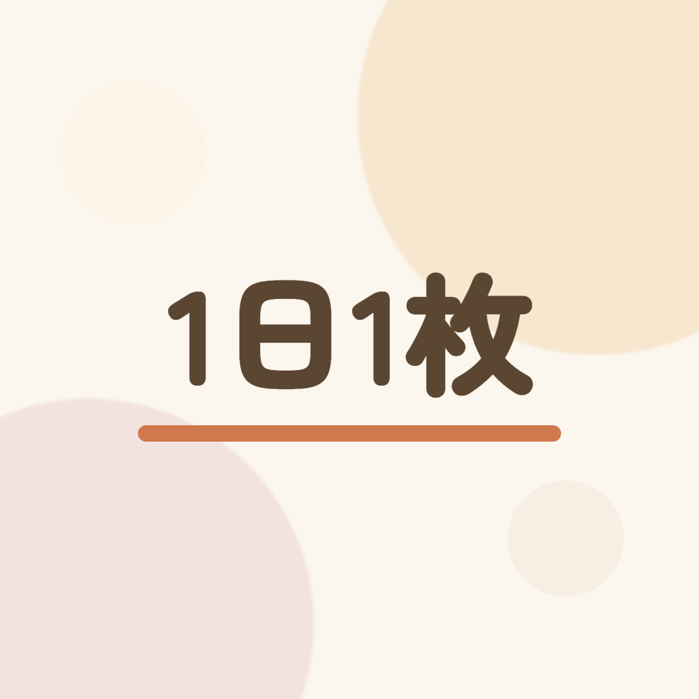
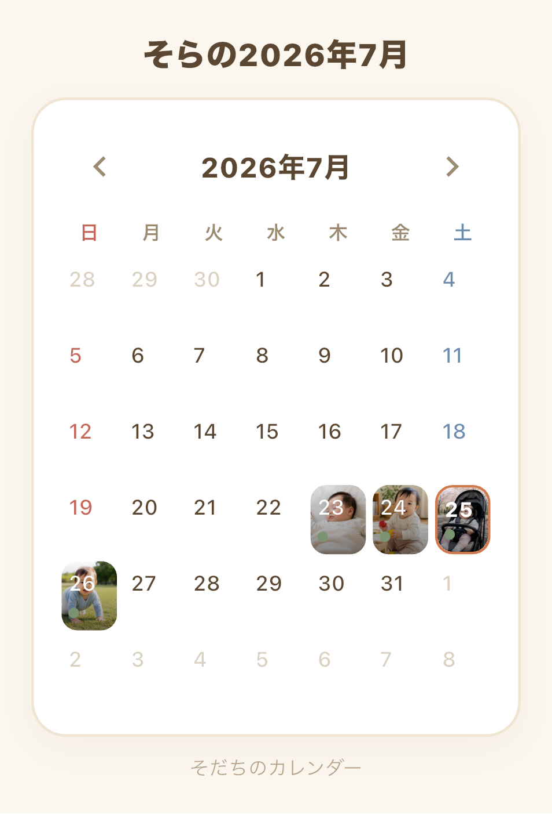
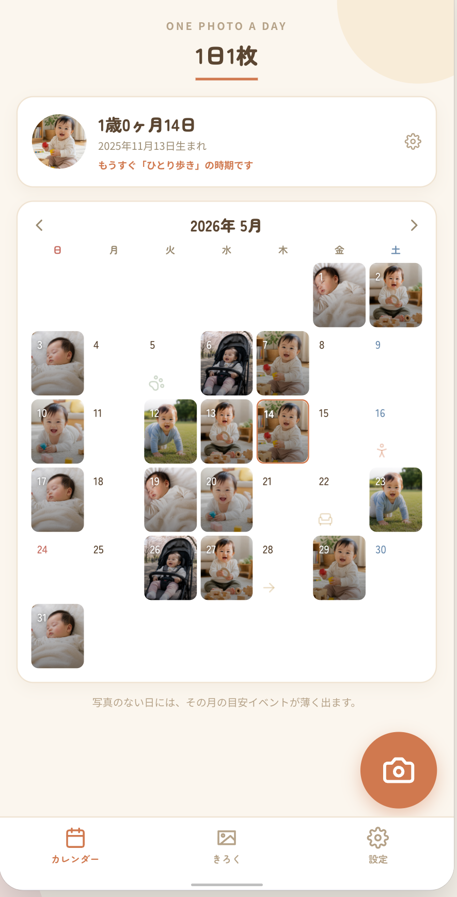
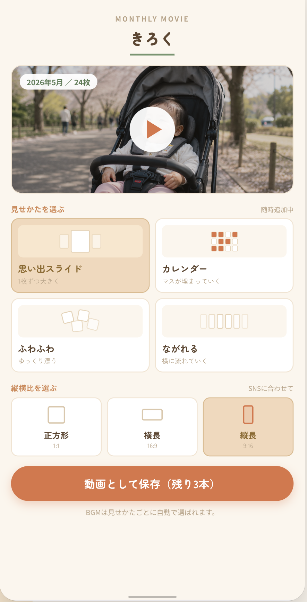
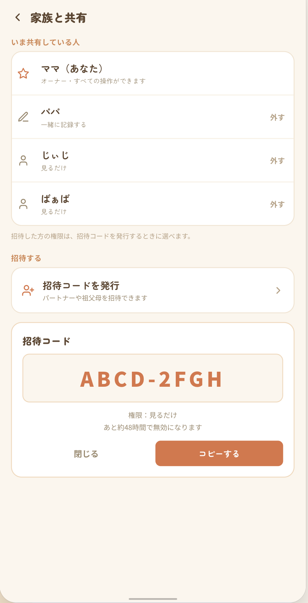
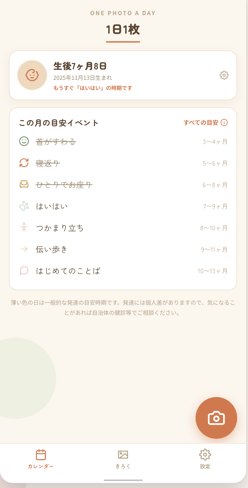
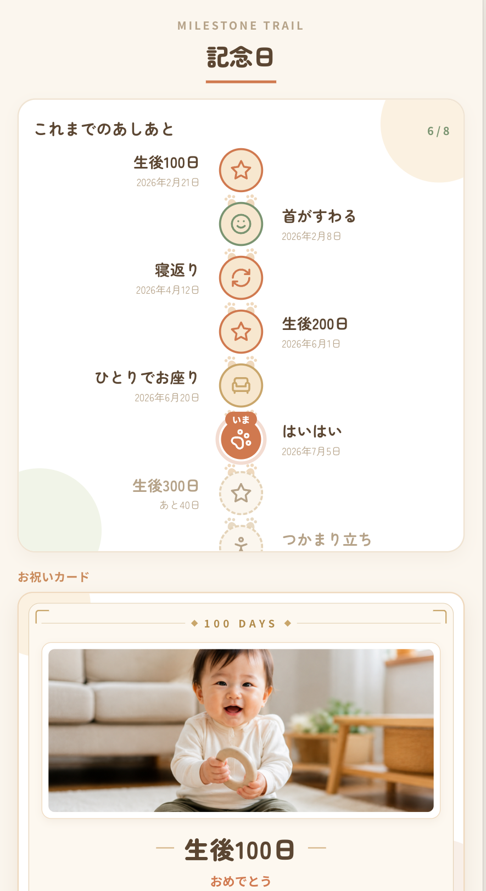
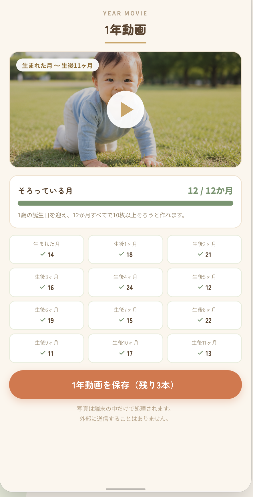
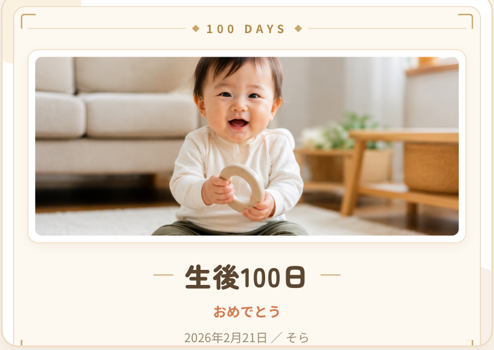

ONE PHOTO A DAY
スマホに溜まっていく大量の写真の中から、お気に入りを1枚だけ選んで動画として残す、動画生成アプリです。選んだ写真はカレンダーに並び、月をめくるだけで見返せる自分だけのフォトアルバムになります。
アカウント登録なし・インストールしたその日から使えます

WHY ONE PHOTO
何百枚も撮ったのに見返す時間がない、フォルダの中で写真が迷子になっている、思い出を残したいのに続かない――そんな悩みを、「今日のベストショットを記録」というシンプルなルールひとつで解決します。
その日のベストショットを1枚だけ保存。カメラで撮る／アルバムから選ぶ、どちらにも対応。
写真はカレンダーのその日のマスに表示。月をめくるだけで、その月の思い出がひと目でわかります。
たまった1ヶ月分の写真を、メモがテロップとして焼き込まれたスライドショー動画として書き出せます。
SCREENS
ゆっくり自動で流れます。ドラッグでも動かせます
ONE PHOTO A DAY
その日いちばんの写真を1枚。カレンダーのマスが、思い出で埋まっていきます。

MANY WAYS TO PLAY
いろいろな見せかたと縦横比を組み合わせて。BGM付きのmp4が、月3本まで無料で保存できます。

FAMILY
8文字の招待コードを伝えるだけ。アプリの操作に慣れていない方でも参加できます。

MILESTONES
首がすわる、寝返り、はじめてのことば。発達の目安と並べて、その日の1枚を残せます。

CELEBRATE
生後100日、200日、300日…。節目の日はその日の1枚がお祝いカードになります。

ONE YEAR
生まれた月から生後11ヶ月まで。1歳の誕生日に、1年の成長がひとつの動画になります。

FEATURES
難しい設定や凝った加工は一切不要。必要なのは「今日はどの写真にする？」と1枚選ぶことだけです。
その日のベストショットを1枚だけ選んで保存。カメラで撮る／アルバムから選ぶ、どちらにも対応しています。
選んだ写真はカレンダーのその日のマスにそのまま表示。自分だけのフォトカレンダーに育っていきます。
写真といっしょに、その日のできごとやひとことを記録できます。
「首がすわる」「寝返り」など10種類を、カラフルなアイコンつきで記録。「その他」で自由なできごとも追加できます。
その月に迎えやすい節目をカレンダー上でそっと案内。次にどんな変化がありそうかが自然と分かります。
1ヶ月分の写真を、メモがテロップとして焼き込まれた動画として書き出し。端末の「写真」アプリに保存されます。
書き出さなくても、タップするだけでその月の写真をアプリ内で自動再生。さっと振り返れます。
写真入りの月間カレンダーを1枚の画像として保存でき、SNSや家族のグループチャットにかんたんに共有できます。
記録を月ごとに整理した文章としてコピー。離れて暮らす家族に送るのにも便利です。
データはまず端末の中だけに保存される設計。登録も設定もなしで、インストールしたその日から使い始められます。
Google／Appleアカウントと連携すれば自動バックアップ。機種変更や再インストールでもデータを引き継げます。
写真が端末の外に出ることはありません。設定画面から、すべての記録やアカウントをいつでも完全に削除できます。
MANY WAYS TO PLAY
たまった1ヶ月分の写真を、BGM付きのスライドショー動画としてまとめて書き出せます。縦横比は正方形・横長・縦長から選べるので、SNSにもそのまま。
生成も書き出しもすべて端末内で行われ、写真を外部へ送ることはありません。
1枚ずつ大きく
マスが埋まっていく
ゆっくり漂う
横に流れていく
星空の奥へ流れる
紙がペロンとめくれる
舞い降りて積もる
見せかたは
随時追加中
MILESTONES
生後1週間・1ヶ月・100日・ハーフバースデー・1歳といった記念日と、発達のできごとを1本の道にまとめて日付順に並べます。写真のある記念日を選ぶと、そのままお祝いカードとして保存できます。

PRICING
¥0
¥300 / 月
PRIVACY
動画の生成も書き出しもすべて端末内で行い、写真を外部の解析・生成サービスへ送ることはありません。
データはまず端末の中だけに保存されます。クラウドへのバックアップは、アカウント連携をした場合にのみ行われます。
設定画面から、すべての記録やアカウントをいつでも完全に削除できます。
FAQ
1日1枚だけを選ぶアプリです。あとから別の写真に差し替えることはいつでもできます。
過去の日付にも写真を登録できます。埋まっていない日は空のマスのまま残るので、無理に埋める必要はありません。
GoogleアカウントやAppleアカウントと連携していれば、記録と写真がクラウドに自動でバックアップされ、そのまま引き継げます。
設定からお子さまを追加して、切り替えながら記録できます。
見せかたごとにBGMが自動で選ばれます。書き出した動画は端末の「写真」アプリに保存されます。
撮って終わりになりがちな日々の写真が、めくるたびに思い出がよみがえる一冊のアルバムに変わります。あなたと家族だけのフォトカレンダーを育ててみませんか。